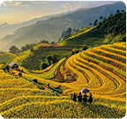

Ekosistem Digital Ketahanan Pangan yang Lebih Adil Transparan
Menghubungkan petani, nelayan, dan peternak langsung ke konsumen — tanpa perantara yang tidak perlu.
50K+
Pengguna Aktif


Agriculture
Harga transparan dan kualitas terjamin bersama AgriLink.